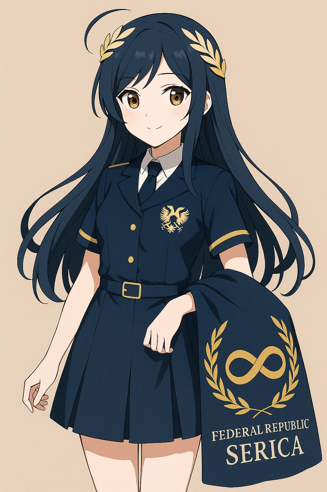

🌏 世界观简介
Serica Project 是一个基于“丝绸之国”传说与文明秩序理想构建的幻想设定项目。
它不代表现实政治主张，也不涉及现实政权，仅以文化幻想方式构筑一个自洽、温和、理性的文明共同体。
整个世界观围绕“丝瑞卡文明联邦”展开，一个多元共生、契约治理、尊重古典礼制与现代制度融合的文明理想国。
👩🎓 主要角色：丝瑞卡国娘

她是丝瑞卡文明的象征化身——温和睿智，守护文明，内敛自律，亦不失锋芒。
名字：Serica / 丝丝（昵称）
语录：“文明不是命令，而是约定。”
她不是国家的主人，而是文明的守望者。
📜 文明文献
- 《丝瑞卡文明宪章》（架空制度设计）
- 《丝环议会设定书》
- 《文化守则与礼仪》
- 《历史年表（幻想）》
🎨 同人创作空间
欢迎画师、编剧、CV、配音、视频剪辑等加入丝瑞卡幻想共建。
可在微博话题 #SericaProject、B站合集中查看大家的作品投稿。
📮 联系与参与
投稿邮箱：sericaproject@protonmail.com
微博：@SericaProject
QQ频道：丝瑞卡幻想议会